Xbox 360
De Xbox 360 is een spelconsole van Microsoft, uitgebracht in 2005 als opvolger van de oorspronkelijke Xbox. De console werd snel populair dankzij zijn krachtige hardware, gebruiksvriendelijke interface en het uitgebreide online platform Xbox Live, waarmee spelers konden gamen, chatten en content downloaden. Bekende exclusives zoals Halo 3, Gears of War en Forza Motorsport versterkten zijn succes. Gedurende zijn levensduur verschenen meerdere modellen, waaronder de Xbox 360 Slim. Ondanks technische problemen bleef de console zeer invloedrijk en behoort hij tot de meest geliefde gameplatformen uit zijn generatie.
Vroeger speelde ik altijd op de Xbox 360. Deze console is het meest nostalgisch voor mij. Hierop speelde ik vooral lego games op. Ook minecraft xbox 360 edition speelde ik vaak. Meestal ging ik samen met mijn tweelingbroer gamen. Ik mis die tijden.

Minecraft
Minecraft is een 3D sandbox-avonturenspel ontwikkeld door Mojang Studios, waarin spelers een volledig aanpasbare driedimensionale wereld verkennen die is opgebouwd uit blokken. In Minecraft zijn er geen vaste doelen, wat het mogelijk maakt om op verschillende manieren te spelen en te creëren. Spelers kunnen bouwen, verkennen en overleven in een dynamisch gegenereerde omgeving vol met verschillende items en wezens. Het spel biedt eindeloze mogelijkheden en creativiteit, waardoor het een populaire keuze is voor gamers van alle leeftijden.
Ik vind Minecraft leuk omdat je van alles kan doen, met vrienden of allen. het maakt niet uit wat want letterlijk alles kan. Ik speel minecraft al sinds dat ik 5 ben en daarom is het ook heel erg nostalgies voor mij.

Fortnite
Fortnite is een online survivalspel ontwikkeld door Epic Games, dat in 2017 werd uitgebracht. Het is een battle royale-game waarin spelers op een eiland landen en strijden om als laatste over te blijven, terwijl ze wapens en items verzamelen. Fortnite kan gespeeld worden op verschillende platforms, waaronder PC, iOS, Android, PlayStation 4, Xbox One en Nintendo Switch.
Fortnite victory royales halen is een van de leukste ervaringen die er is.
Slme Rancher
Slime Rancher is een vrolijk en kleurrijk spel waarin je als rancher Beatrix LeBeau op een verre planeet allerlei schattige slimes verzamelt en verzorgt. Met je Vacpack vang je slimes, geef je ze eten en verzamel je hun “plorts” om geld te verdienen. Daarmee kun je je ranch uitbreiden met hokken, tuinen en nieuwe technologie. Het spel draait om ontdekken, experimenteren en het combineren van verschillende soorten slimes, terwijl je een ontspannen en grappige wereld verkent vol geheimen en avonturen.
De slimes vond ik altijd zo schattig en cute.

StoneHearth
Stonehearth is een voxel-citybuilder waarin je een kleine groep mensjes begeleidt terwijl ze een nieuwe nederzetting opbouwen. Je verzamelt grondstoffen, bouwt huizen en werkplaatsen, wijst banen toe (zoals boer, houtbewerker of soldaat) en verdedigt je dorp tegen monsters. De game mixt stadsbouw, survival en lichte RPG-elementen in een sfeervolle, blokkerige wereld.
Ik heb deze game vroeger best vaak gespeeld, ik vond het leuk om dorpen groot te brengen tot een mooie stad. Ook moest je het gevaar (de goblins) vermijden. Dat gaf spanning.
Lego Marvel Super Heroes
Lego Marvel Super Heroes is een actie-avonturenspel waarin je speelt met bekende Marvel-helden en -schurken, allemaal in LEGO-stijl. Je kunt personages zoals Iron Man, Spider-Man, Hulk en vele anderen vrijspelen en gebruiken. Het verhaal draait om het tegenhouden van Loki en andere vijanden die de wereld willen veroveren. Het spel combineert humor, eenvoudige puzzels, gevechten en een grote open wereld (New York) waarin je missies en uitdagingen kunt doen.
Splitscreen met mijn tweelingbroer was de beste tijd van mijn leven. Lego games waren altijd al fire. Maar deze is echt de leukste en het nostalgieste voor mij.
Overcooked
Overcooked is een chaotisch coöperatief kookspel waarin spelers samen gerechten moeten bereiden in steeds veranderende en uitdagende keukens. Je hakt ingrediënten, kookt, serveert en wast af terwijl de omgeving constant obstakels opwerpt, zoals bewegende vloeren, branden of splitsende platforms. Teamwork, communicatie en timing zijn essentieel om bestellingen op tijd af te ronden en hoge scores te behalen. Naarmate je verder komt, worden de recepten complexer en de keukens hectischer. Overcooked staat bekend om zijn humor, snelle tempo en hilarische stressmomenten, waardoor het ideaal is voor speelavonden met vrienden of familie.
Ik heb dit zo vaak gespeeld met mijn tweelingbroer, dit was geweldig. Het was chaos, maar daarom was het juist leuk.
Spore
Spore is een creatie- en simulatiespel waarin je een zelfgemaakte levensvorm begeleidt van een simpele cel tot een geavanceerde ruimtebeschaving. Tijdens het spelen doorloop je verschillende fasen, zoals de Cel-, Wezen-, Stam-, Beschaving- en Ruimtefase. In elke fase verandert de manier van spelen en kun je je soort verder ontwikkelen, aanpassen en uitbreiden. Uiteindelijk kun je de hele planeet en later het universum verkennen, samenwerken met andere soorten of ze juist bestrijden.
Dit was een van mijn meest favoiete games ooit, ik heb het wel 100x uitgespeeld. Ik vind het leuk om mijn eigen wezen te maken in het spel. Ik heb alle achievements. Hiernaast zie je een van mijn creatures eerste →
Roblox is een platform waar gebruikers zelf games kunnen maken. Andere gebruikers kunnen die spelen. Roblox is dus eigenlijk niet zelf een game, maar een manier om heel erg veel games te spelen. Roblox is gratis en dus toegangkelijk voor iedereen. Ik vind roblox leuk omdat er zo veel keuze is, er is altijd wat te spelen. Ook is het leuk om met mijn vrienden horror games te spelen. Vroeger, tijdens de basisschool, vond ik roblox programeren wel interessant, toen heb ik de code taal Lua geleerd. Daarmee kon je games maken in roblox. Ik vind Informatica daarom ook een leuk vak. Hieronder zie je een aantal van mijn favoriete roblox games.

 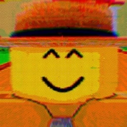
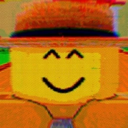

 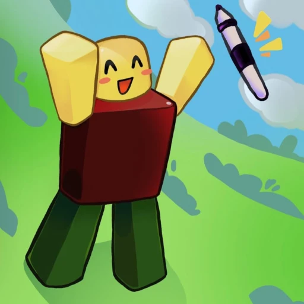
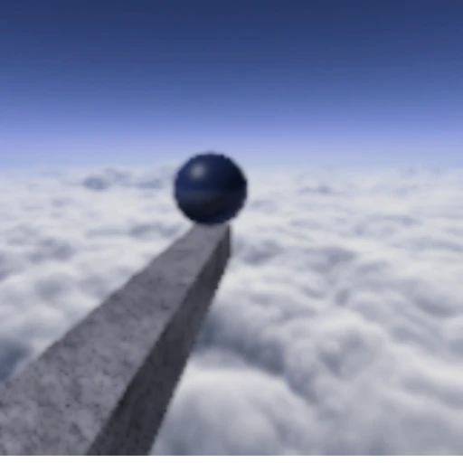
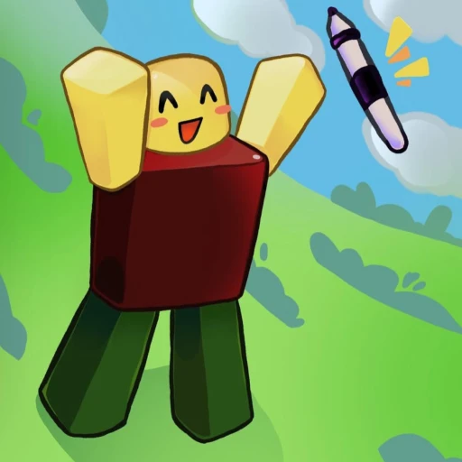
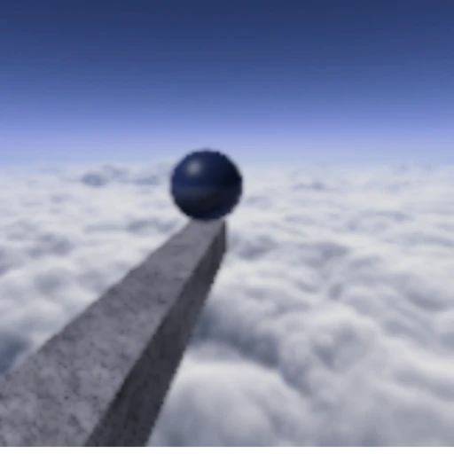
 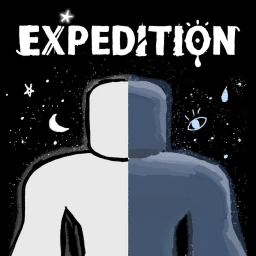
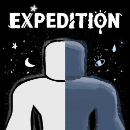
 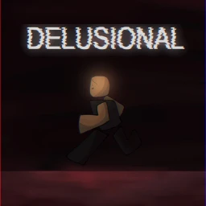
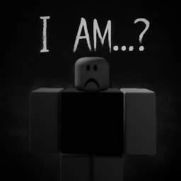
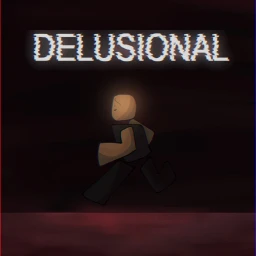
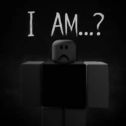

 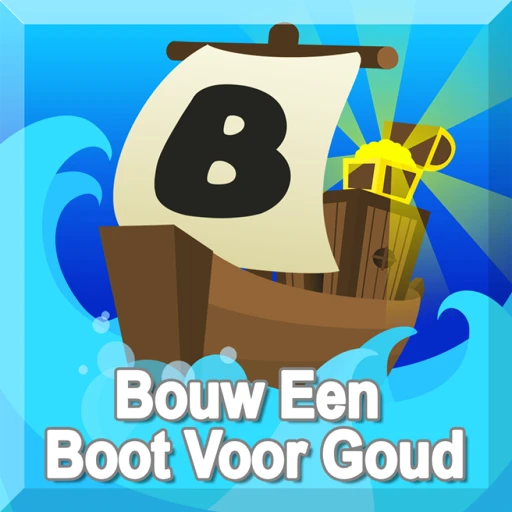
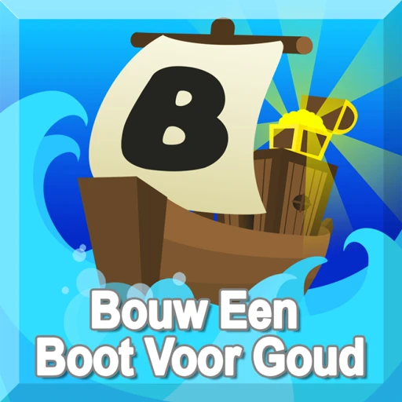
 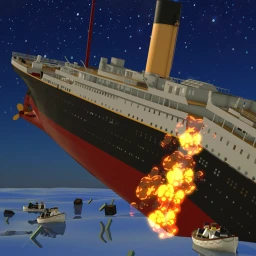
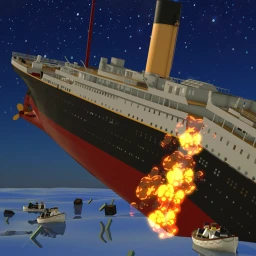


 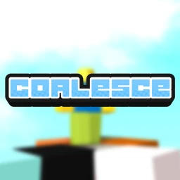
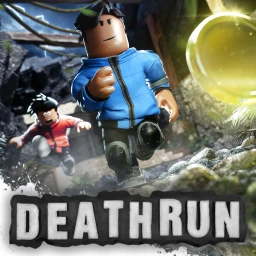
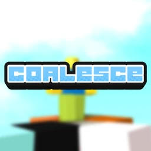
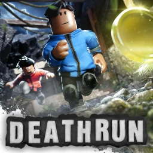